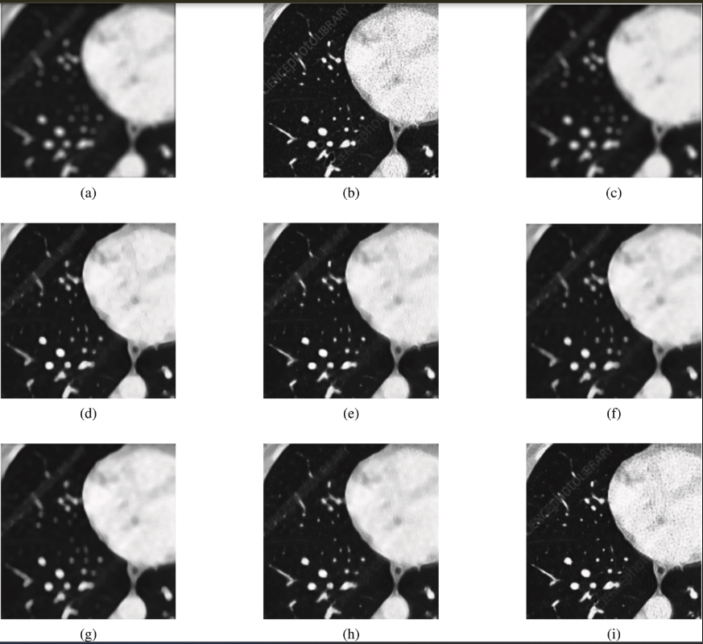
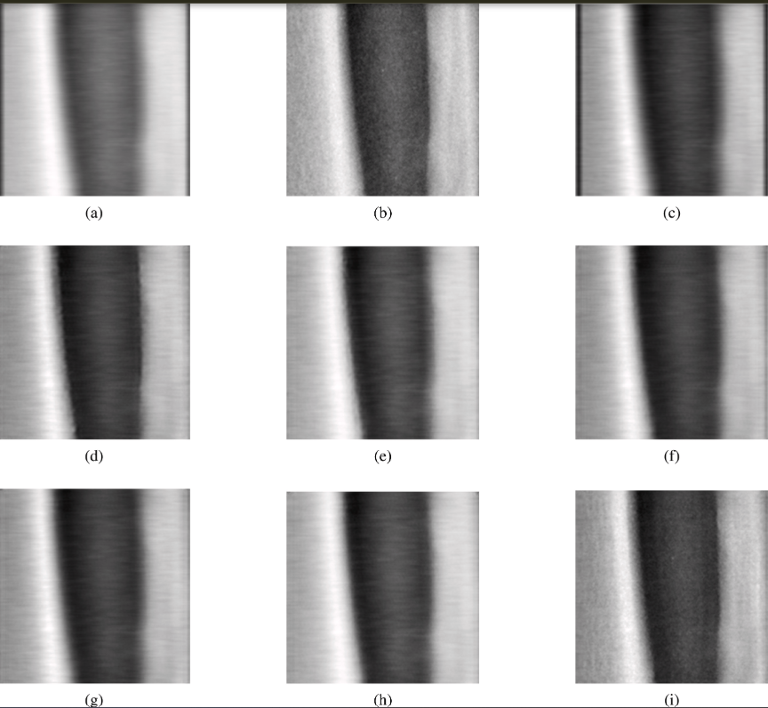

Performance and Visual Gallery
The SAGA operator has been rigorously evaluated across multiple baseline architectures (VGGNet, ResNet, U-Net, EDSR) and state-of-the-art activation functions (Sigmoid, Tanh, ReLU, Swish, ELU, FReLU).
Below is a curated summary of the visual performance, alongside exhaustive quantitative ablation studies and computational efficiency metrics.
Visual Comparison: Best-in-Class Models
SAGA selectively routes gradients to preserve fine anatomical boundaries while suppressing uniform background noise, outperforming standard parameterless and parametric activations.
Chest CT Deblurring (ResNet Backbone)

(Visual comparison using ResNet on a representative Chest X-ray sample. (a) Blurry input, (b) Ground truth, (c) Sigmoid, (d) Tanh, (e) ReLU, (f) Swish, (g) ELU, (h) FReLU, (i) SAGA. Notice the structural preservation of the pulmonary and rib margins in the SAGA output).Osteoporosis DXA Quality (ResNet Backbone)

(Visual comparison using ResNet on a representative Osteoporosis X-ray sample. (a) Blurry input, (b) Ground truth, (c) Sigmoid, (d) Tanh, (e) ReLU, (f) Swish, (g) ELU, (h) FReLU, (i) SAGA. SAGA ensures that the high-frequency details of trabecular bone margins are maintained).Quantitative Benchmarks
SAGA consistently yields the highest Peak Signal-to-Noise Ratio (PSNR) and Structural Similarity Index Measure (SSIM) across both clinical modalities and all network backbones, demonstrating universal architectural compatibility.
Best results in each architectural category are highlighted in bold.
Architecture |
Activation |
CT Deblurring PSNR (dB) |
CT Deblurring SSIM |
Osteoporosis DXA PSNR (dB) |
Osteoporosis DXA SSIM |
|---|---|---|---|---|---|
VGGNet |
Sigmoid |
26.45 ± 3.89 |
0.74 ± 0.14 |
35.82 ± 8.42 |
0.88 ± 0.11 |
Tanh |
30.91 ± 4.24 |
0.84 ± 0.12 |
35.81 ± 8.39 |
0.87 ± 0.12 |
|
ReLU |
26.45 ± 3.86 |
0.73 ± 0.14 |
36.13 ± 8.93 |
0.88 ± 0.11 |
|
Swish |
26.44 ± 3.88 |
0.74 ± 0.14 |
36.02 ± 8.73 |
0.88 ± 0.11 |
|
ELU |
31.35 ± 4.11 |
0.85 ± 0.11 |
44.56 ± 14.60 |
0.90 ± 0.10 |
|
FReLU |
35.60 ± 4.47 |
0.93 ± 0.04 |
44.84 ± 8.50 |
0.95 ± 0.04 |
|
SAGA |
37.16 ± 4.77 |
0.96 ± 0.04 |
50.33 ± 10.26 |
0.98 ± 0.02 |
|
ResNet |
Sigmoid |
26.93 ± 3.81 |
0.72 ± 0.14 |
42.62 ± 14.80 |
0.89 ± 0.11 |
Tanh |
30.52 ± 3.81 |
0.83 ± 0.11 |
45.75 ± 14.10 |
0.91 ± 0.09 |
|
ReLU |
31.39 ± 4.20 |
0.85 ± 0.07 |
46.79 ± 15.10 |
0.95 ± 0.09 |
|
Swish |
29.28 ± 4.00 |
0.80 ± 0.13 |
44.78 ± 13.20 |
0.91 ± 0.09 |
|
ELU |
28.89 ± 3.96 |
0.79 ± 0.13 |
45.01 ± 14.02 |
0.91 ± 0.09 |
|
FReLU |
30.38 ± 3.93 |
0.83 ± 0.12 |
46.29 ± 11.35 |
0.93 ± 0.03 |
|
SAGA |
34.93 ± 4.20 |
0.93 ± 0.07 |
48.82 ± 9.58 |
0.97 ± 0.07 |
|
U-Net |
Sigmoid |
27.35 ± 3.86 |
0.72 ± 0.15 |
37.97 ± 7.22 |
0.85 ± 0.12 |
Tanh |
28.41 ± 3.77 |
0.76 ± 0.13 |
35.94 ± 7.98 |
0.83 ± 0.11 |
|
ReLU |
32.18 ± 3.98 |
0.87 ± 0.10 |
41.32 ± 10.10 |
0.89 ± 0.10 |
|
Swish |
29.49 ± 3.91 |
0.81 ± 0.11 |
41.35 ± 10.30 |
0.87 ± 0.10 |
|
ELU |
29.06 ± 3.99 |
0.79 ± 0.13 |
36.92 ± 8.56 |
0.86 ± 0.11 |
|
FReLU |
34.01 ± 3.98 |
0.90 ± 0.08 |
42.21 ± 9.25 |
0.92 ± 0.05 |
|
SAGA |
36.33 ± 4.05 |
0.95 ± 0.06 |
44.86 ± 10.02 |
0.94 ± 0.05 |
|
EDSR |
Sigmoid |
27.74 ± 3.88 |
0.76 ± 0.13 |
39.65 ± 11.37 |
0.88 ± 0.11 |
Tanh |
30.01 ± 3.94 |
0.82 ± 0.12 |
42.04 ± 13.32 |
0.90 ± 0.09 |
|
ReLU |
29.98 ± 4.13 |
0.82 ± 0.12 |
43.72 ± 13.16 |
0.91 ± 0.09 |
|
Swish |
30.30 ± 4.01 |
0.83 ± 0.12 |
42.70 ± 11.37 |
0.87 ± 0.11 |
|
ELU |
27.44 ± 3.90 |
0.76 ± 0.13 |
43.63 ± 13.11 |
0.89 ± 0.10 |
|
FReLU |
34.43 ± 4.38 |
0.91 ± 0.01 |
40.44 ± 8.68 |
0.88 ± 0.09 |
|
SAGA |
38.05 ± 4.64 |
0.96 ± 0.03 |
47.97 ± 8.92 |
0.97 ± 0.03 |
Computational Efficiency
A critical advantage of SAGA is its ability to deliver state-of-the-art spatial gating without compromising the computational feasibility of the network.
The following evaluation details the deblurring fidelity against the computational cost, measured on real clinical samples using an 8-core CPU environment. SAGA achieves substantial gains in image quality while maintaining competitive parameter counts and inference latency compared to standard baselines.
Method |
PSNR (dB) |
SSIM |
Params (M) |
FLOPS (G) |
Latency (ms) |
|---|---|---|---|---|---|
ReLU |
31.39 |
0.85 |
1.38 |
154.81 |
939 |
FReLU |
30.38 |
0.83 |
1.39 |
156.32 |
335 |
SAGA |
34.93 |
0.93 |
1.46 |
165.22 |
899 |
Note: SAGA’s highly optimized depthwise-separable architecture allows it to significantly outperform FReLU in metric quality, while actually executing with lower latency than the baseline network.
Citation
If you use the SAGA package or find this work helpful in your research, please cite the foundational manuscript:
Siju K.S., Vipin Venugopal, Mithun Kumar Kar, Jayakrishnan Anandakrishnan (2026). An interpretable deep learning method for medical image deblurring and restoration. Healthcare Analytics. DOI: https://doi.org/10.1016/j.health.2026.100468
BibTeX:
@article{siju2026interpretable,
title={An interpretable deep learning method for medical image deblurring and restoration},
author={Siju, KS and Venugopal, Vipin and Kar, Mithun Kumar and Anandakrishnan, Jayakrishnan},
journal={Healthcare Analytics},
pages={100468},
year={2026},
publisher={Elsevier},
doi={10.1016/j.health.2026.100468},
url={[https://doi.org/10.1016/j.health.2026.100468](https://doi.org/10.1016/j.health.2026.100468)}
}